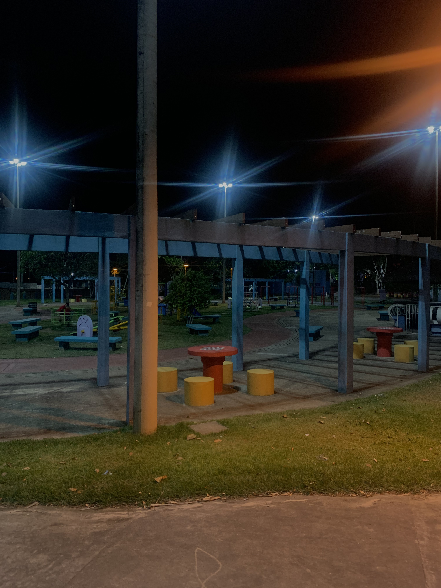
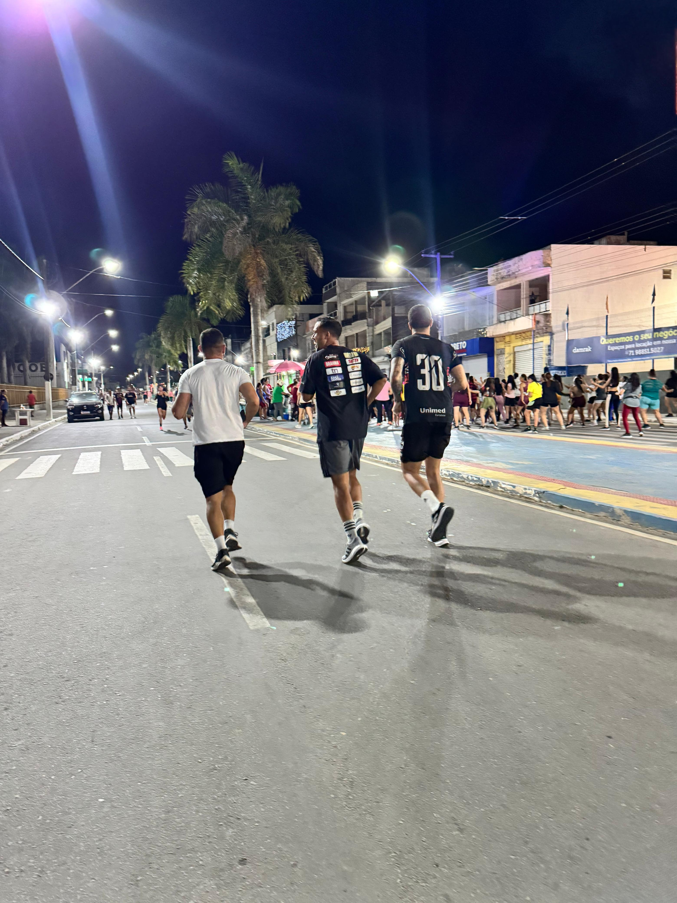

Balneário Bica

Informações
- Local: Parque da Bica
- Horário: Fins de Semana
Sobre o Local
Um refúgio verde dentro da cidade. Além das piscinas naturais, possui trilhas curtas.
Natureza
Lazer

Diversão para Crianças
Ambiente de recreação infantil, perfeito para as crianças brincarem com segurança e contato com a natureza.

Movimento e Saúde
Aulas de dança e zumba animam o espaço, promovendo saúde e integração social ao ar livre.

Esporte ao Ar Livre
Área ideal para corridas e caminhadas, cercada por verde e ar puro.

Esportes Coletivos
Quadras de areia disponíveis para a prática de vôlei e futevôlei com os amigos.

Lazer e Convivência
Espaços de convivência e quiosques para aproveitar o dia com a família e amigos.

Comércio Local
Opções de frutas frescas e hidratação disponíveis no local.

Lanchinhos e Apoio
Pontos de apoio com lanches para recarregar as energias durante o passeio.